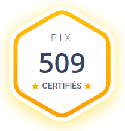

My skills and my project
Analytical Chemistry
In this subject, I have acquired many skills.
In particular the realization of various methods of analysis of dosage in aqueous solution, such as colorimetry,
pH-metry, conductimetry...
I have acquired knowledge in chromatography, more precisely in HPLC (High Performance Liquid Chromatography),
GC (Gas Chromatography), GC-MS (Gas Chromatography-Mass Spectrometry).
A final method is UV (Ultra-Violet) spectrophotometry: atomic absorption.

Chemistry Synthesis
In summary, I reinforced my knowledge while learning new things. Indeed,
having realized different synthesis methods at small and intermediate scales.
I learned to manipulate on intermediate scales to the industrial scale,
to synthesize products in larger quantities than in the laboratory (in the kilo range).
In the laboratory, we realized reflux setups, fractional/simple distillation setups, filtration on Büchner...
I learned different methods of purification such as recrystallization, distillations
or even chromatography.
Also, to know if our product is pure, I used methods like
TLC (Thin Layer Chromatography), NMR (Nuclear Magnetic Resonance) or Infrared spectra.
Infrared spectra.
As a final method during my internship, I studied and carried out crystallographic analyses and tackled the concepts in class.

Chemistry Formulation
During the year, we were introduced to formulation, a subject that allows us to
understand how to create everyday products in beauty, household products...
During the year, I formulated and realized my own paint, but also creams, detergents...
An important step in the formulation is also the characterization of the formulated products.
For that, I used different devices such as a spectrocolorimeter for the paint, rheological tests
mechanical tests like viscosity or surface tension of a liquid and many other tests.

Computer tools
For the many skills listed above many require computer tools like HPLC.
I have a very good command of the Office suite (Word, Excel, PowerPoint...) which I use daily.
For the realization of a report, it is often useful to show the molecules,
of a chemical reaction, that's why I learned to use the Chemdrw and ChemSketch softwares.
As far as instrumentation control software is concerned, I used Solaar (Atomic Absorption),
MagIC Net (chromatoionics), Chromeleon (HPLC / GC). The software Regressi and LatisPro to draw
curves following pH-metric determinations for example.
I also passed a PIX certification to evaluate, develop and certify its digital skills.
You can find my results with the code: P-TWCJYFY9 where I got 611 points.